Lucknow: A symphony of sights, sounds, and spices “Wo aabo hawa wo sukoon kaheen aur nahin milta milte hain bahut shahar magar Lucknow sa nahin milta” That tranquillity in the air, that peace unfound elsewhere, You may visit many cities, but none like Lucknow's flair.
Lucknow 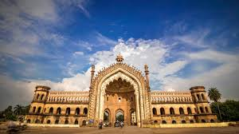 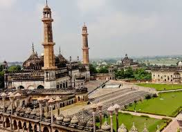 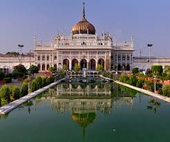 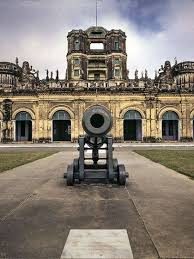The ancient city of architectural wonders Sometimes, a city becomes inseparable from its most iconic landmark. Utter the name ‘Agra’, and two words instantly spring to mind: Taj Mahal. A monument crafted from white marble so exquisite that it earns its place among the Seven Wonders of the World. A testament to human artistry, the Taj Mahal draws people worldwide with its breathtaking beauty and grandeur.
Agra 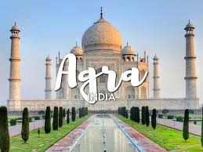 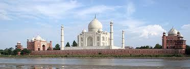
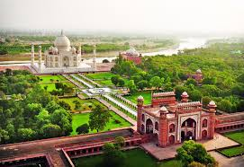
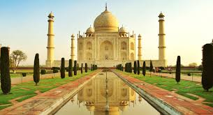
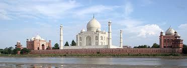
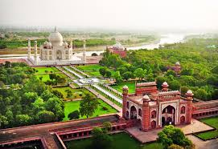
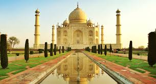

Steeped in history and mythology, Mathura holds immense significance for Hindus as the birthplace of Lord Krishna, one of Lord Vishnu's most cherished incarnations. This city, considered the capital of Braj Bhoomi, is intricately linked to Lord Krishna's legend. Millions revere Lord Krishna and his playful antics, keeping his stories alive through generations. Mathura's location along the Yamuna River proved advantageous, fostering its growth during the Mauryan era. Emperor Ashoka's reign further bolstered the city's prosperity.
vrindavan 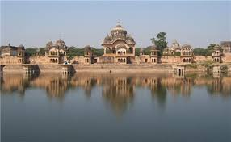 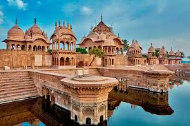 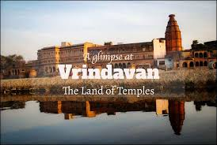